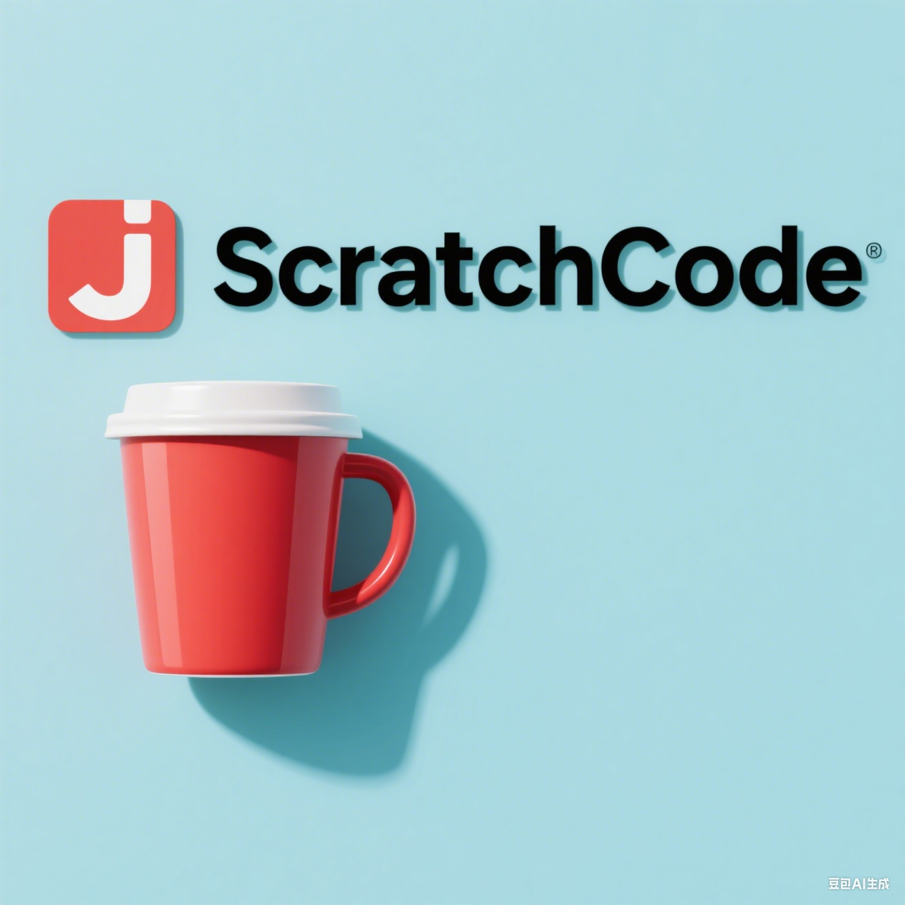

REALROOK1E
Hi, I'm ZeKai, a developer passionate about technology and sharing.
About Me
- I have completed a four-year undergraduate degree in Software Engineering. My professional experience began in 2023 at China Aerospace Science and Technology Corporation (CASC) Software, where I contributed to several project workflows and authored a high-performance stream processing component that was integrated into the central code repository.
- In the autumn of 2024, I came to Sweden to pursue studies in Computer Science. To date, I have successfully completed my coursework, collaborating with diverse groups on projects and achieving excellent grades.
- Beyond academics, I am a passionate fan of football, snooker, and indie rock, and I was formerly the guitarist and keyboardist for a band. I began a journey to travel the world in 2024 and have so far visited 20 cities and tourist destinations. My quest across Europe is to find a guitar with a truly soul-stirring sound.
- I also know everything about the Japanese Transformers animated series, The Headmasters and Super-God Masterforce—right down to the price of a second-hand Ultra Magnus model on retail websites.
My Projects
InstaVerse
A distributed, highly available large-scale microservices blog system, which covers a wide range of popular technology stacks and personal components, is my most proud project.
View Details ScratchCode Series
Implementing various code libraries, frameworks,even JVM in Java from scratch using only basic libraries.
View Details
Aether X
A full-stack application handcrafted based on the Spring AI framework, encompassing a Q&A chatbot,AI agent, a private knowledge base with RAG, and fine-tuning of LLMs
View DetailsExperience
-
Software Engineer
China Aerospace Science and Technology Corporation (CASC) Software 2023 - 2024Contributed to several project workflows and authored a high-performance stream processing component that was integrated into the central code repository.
Key Achievement: Through Kafka performance optimization and utilizing Flink as the data processing engine, implemented a 100k QPS data peak handling solution, while resolving data loss and idempotency issues, and ensuring reliability through end-to-end data tracking. -
Master's Student
Linköping University - Computer Science 2024 - PresentSuccessfully completed coursework, collaborating with diverse groups on projects and achieving excellent grades.
Notes & Diary
Life Highlights

Nobel Ceremony
The joyful moment of graduation, marking the start of a new chapter in life.
View Details
Travel
Traveling with friends, capturing youth and friendship in every photo.
View Details
Tech Talk
The stage of my first tech talk, breaking through myself and growing from the experience.
View Details